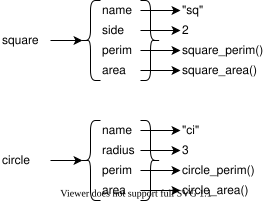
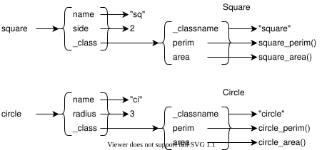
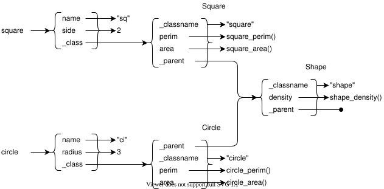
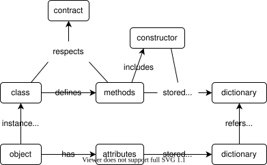

The Problem(s)
-
What is a natural way to represent real-world "things" in code?
-
How can we organize code to make it easier to understand, test, and extend?
-
Are these the same thing?
The Big Idea
A program is just another data structure.

Functions are Objects
defdefines a variable whose value is the function's instructions
i
def example():
print("in example")
- We can assign that value to another variable
i
alias = example
alias()
i
in example
Representing Shapes
- Start with the contract for shapes
i
class Shape:
def __init__(self, name):
self.name = name
def perimeter(self):
raise NotImplementedError("perimeter")
def area(self):
raise NotImplementedError("area")
Provide Implementations
i
class Square(Shape):
def __init__(self, name, side):
super().__init__(name)
self.side = side
def perimeter(self):
return 4 * self.side
def area(self):
return self.side ** 2
class Circle(Shape):
def __init__(self, name, radius):
super().__init__(name)
self.radius = radius
def perimeter(self):
return 2 * math.pi * self.radius
def area(self):
return math.pi * self.radius ** 2
Polymorphism
i
examples = [Square("sq", 3), Circle("ci", 2)]
for thing in examples:
n = thing.name
p = thing.perimeter()
a = thing.area()
print(f"{n} has perimeter {p:.2f} and area {a:.2f}")
- OK, but how does it work?
Let's Make a Square
i
def square_perimeter(thing):
return 4 * thing["side"]
def square_area(thing):
return thing["side"] ** 2
def square_new(name, side):
return {
"name": name,
"side": side,
"perimeter": square_perimeter,
"area": square_area
}
-
An object is just a (specialized) dictionary
-
A method is just a function that takes the object as its first parameter
Let's Make a Square

Calling Methods
i
def call(thing, method_name):
return thing[method_name](thing)
examples = [square_new("sq", 3), circle_new("ci", 2)]
for ex in examples:
n = ex["name"]
p = call(ex, "perimeter")
a = call(ex, "area")
print(f"{n} {p:.2f} {a:.2f}")
-
Look up the function in the object
-
Call it with the object as its first argument
-
obj.meth(arg)isobj["meth"](obj, arg)
A Better Square
i
def square_perimeter(thing):
return 4 * thing["side"]
def square_area(thing):
return thing["side"] ** 2
Square = {
"perimeter": square_perimeter,
"area": square_area,
"_classname": "Square"
}
def square_new(name, side):
return {
"name": name,
"side": side,
"_class": Square
}
Calling Methods
i
def call(thing, method_name):
return thing["_class"][method_name](thing)
examples = [square_new("sq", 3), circle_new("ci", 2)]
for ex in examples:
n = ex["name"]
p = call(ex, "perimeter")
a = call(ex, "area")
c = ex["_class"]["_classname"]
print(f"{n} is a {c}: {p:.2f} {a:.2f}")
-
Look in the class for the method
-
Call it with the object as the first parameter
-
And we can now reliably identify objects' classes
Calling Methods

Variable Arguments
i
def show_args(title, *args, **kwargs):
print(f"{title} args '{args}' and kwargs '{kwargs}'")
show_args("nothing")
show_args("one unnamed argument", 1)
show_args("one named argument", second="2")
show_args("one of each", 3, fourth="4")
i
nothing args '()' and kwargs '{}'
one unnamed argument args '(1,)' and kwargs '{}'
one named argument args '()' and kwargs '{'second': '2'}'
one of each args '(3,)' and kwargs '{'fourth': '4'}'
Spreading
i
def show_spread(left, middle, right):
print(f"left {left} middle {middle} right {right}")
all_in_list = [1, 2, 3]
show_spread(*all_in_list)
all_in_dict = {"right": 30, "left": 10, "middle": 20}
show_spread(**all_in_dict)
i
left 1 middle 2 right 3
left 10 middle 20 right 30
Inheritance
- Add a method to
Shapethat uses methods defined in derived classes
i
class Shape:
def __init__(self, name):
self.name = name
def perimeter(self):
raise NotImplementedError("perimeter")
def area(self):
raise NotImplementedError("area")
def density(self, weight):
return weight / self.area()
Inheritance

Yes, This Works
i
examples = [Square("sq", 3), Circle("ci", 2)]
for ex in examples:
n = ex.name
d = ex.density(5)
print(f"{n}: {d:.2f}")
i
sq: 0.56
ci: 0.40
Implementing Inheritance
i
def shape_density(thing, weight):
return weight / call(thing, "area")
Shape = {
"density": shape_density,
"_classname": "Shape",
"_parent": None
}
Searching for Methods
i
def call(thing, method_name, *args):
method = find(thing["_class"], method_name)
return method(thing, *args)
def find(cls, method_name):
while cls is not None:
if method_name in cls:
return cls[method_name]
cls = cls["_parent"]
raise NotImplementedError("method_name")
Yes, This Works Too
i
examples = [square_new("sq", 3), circle_new("ci", 2)]
for ex in examples:
n = ex["name"]
d = call(ex, "density", 5)
print(f"{n}: {d:.2f}")
i
sq: 0.56
ci: 0.40
Constructors
i
def shape_new(name):
return {
"name": name,
"_class": Shape
}
Shape = {
"density": shape_density,
"_classname": "Shape",
"_parent": None,
"_new": shape_new
}
Parentage
i
def square_new(name, side):
return make(Shape, name) | {
"side": side,
"_class": Square
}
Square = {
"perimeter": square_perimeter,
"area": square_area,
"_classname": "Square",
"_parent": Shape,
"_new": square_new
}
Use
i
examples = [make(Square, "sq", 3), make(Circle, "ci", 2)]
for ex in examples:
n = ex["name"]
d = call(ex, "density", 5)
print(f"{n}: {d:.2f}")
i
sq: 0.56
ci: 0.40
Summary
